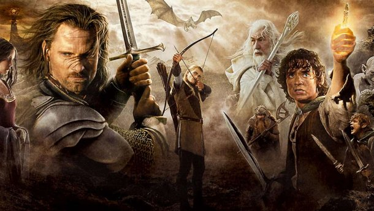

– Где мы, Гэндальф?
– На землях Гондора. Это - Анориен. Пиппин притих, но тут же прижался к магу.
– Что там? Смотри! Красный огонь! Как драконий глаз. А вон еще один!
Гэндальф только крикнул коню:
– Вперед, Сполох, вперед! Спеши, друг! - и, наклонившись к Пиппину, сказал: - Смотри. Это зовут на помощь огни Гондора. Война началась. Вот огонь на Амон Дине, пламя на Эленахе, и дальше огни, Нардол, Эрелас, Мин Риммон, Каленхад и Халифириен у границ Рохана. Вперед, Сполох!
Когда стих топот копыт Сполоха, уносящего Гэндальфа и Пиппина, Мерри вернулся к Арагорну. Сумку свою он потерял еще в Порт Галене, собирать было нечего - так, кое-какие полезные мелочи с развалин Изенгарда. Леголас и Гимли ожидали только сигнала тронуться в путь.
– Нас осталось четверо, - сказал Арагорн. - Мы будем вместе, но пойдем не одни. После этого крылатого ужаса король решил выступать немедля и возвращаться к холмам под прикрытием ночи.
– А потом куда? - спросил Леголас.
– Еще не знаю. Правитель отдал приказ войскам собраться в Эдорасе на четвертую ночь после этой. Там, я думаю, его ждут вести о войне, и Всадники Рохана двинутся к Минас Тириту. Но у меня другая дорога.
– Я с тобой, - тут же сказал Леголас.
– И я тоже, - отозвался Гимли.
– Мой путь еще темен для меня, - задумчиво ответил Арагорн. - Кажется, наступает час, к которому я готовился всю жизнь. Нам тоже нужно попасть в Минас Тирит, но каким путем мы придем туда, я еще не решил.
– А я? - подал голос Мерри. - До сих пор от меня было немного толку, но я все-таки не какая-нибудь безделушка. Всадникам не до меня, Заметка 2 хотя их Правитель и обещал, что мы поговорим с ним о Шире после возвращения.
– Мне видится, что ты должен идти с ним, Мерри, - сказал Арагорн. - И не рассчитывай на весёлую прогулку! Теодену долго еще не сидеть в покое Золотых Палат. Немало надежд иссякнет этой горькой весной!